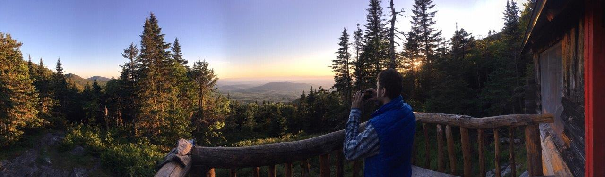
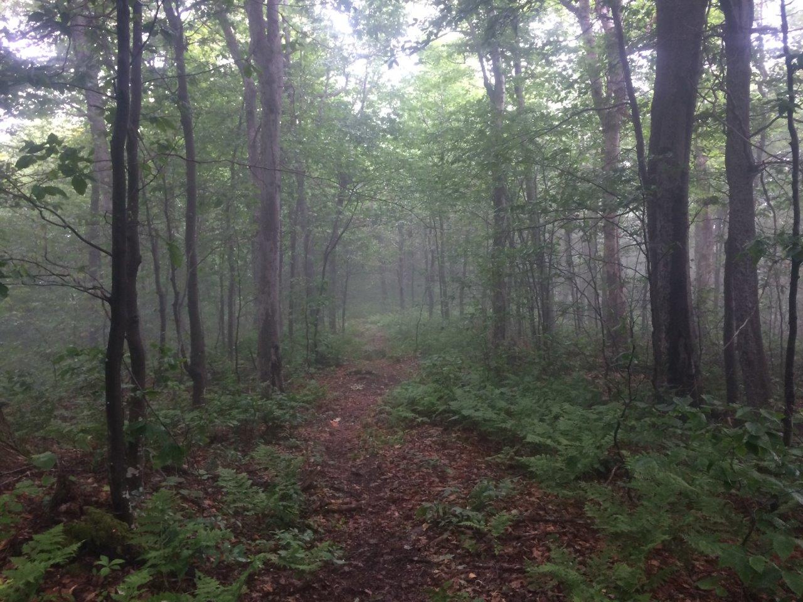
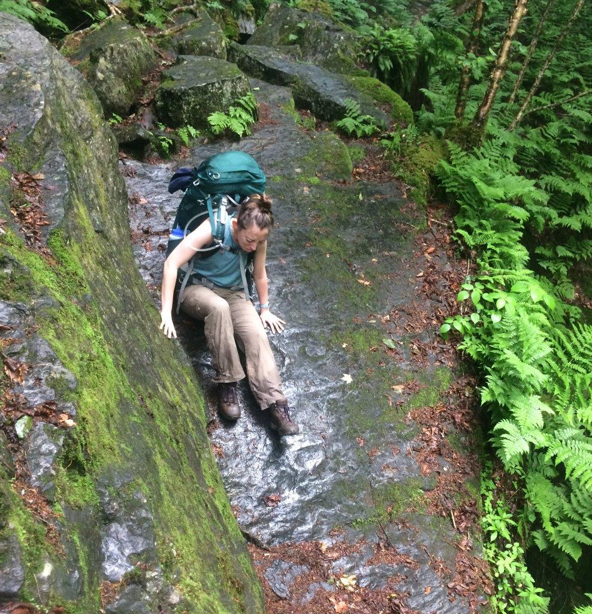
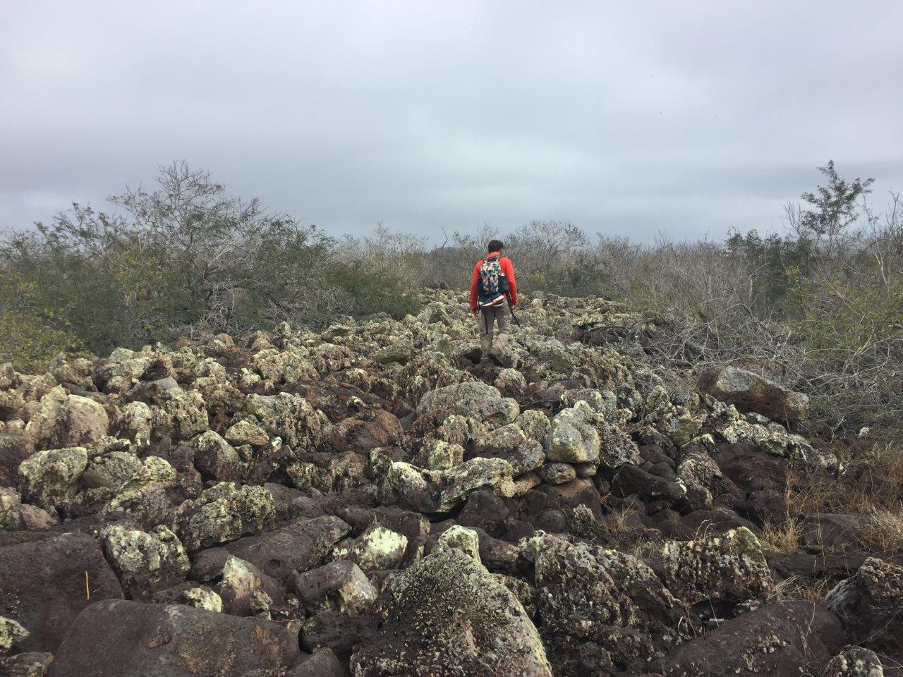

The Long Trail (Part 3)
Harrison Goldspiel
6 September 2019

Day 18—Members of the Tribe
June 24, 2018: Bamford Ridge Shelter to Buchanan Shelter (10.9 miles)
…sliding and sliding…
— (Oliver, lines 10-11)
It was a misty day. One of those Vermont mountain fogs that I’ve grown to admire more with each occurrence. I hiked the long descent down to US-2, the lowest point on the trail, cruising to the Hamilton soundtrack along the way.
I opted to stick to the road (Duxbury) over the re-route through the farm meadows. From what I recall, the trail was overgrown and would be very wet with all the recent rain. It wasn’t very far to the bridge along the road, in any case.
I got to the parking lot a bit before Theresa. There was a “Free Little Library” on the side of the lot, so I decided to kill some time and have a look at the local trail literature. Sadly, the only books to read were Nancy Drew “novels.” Out of desperation, I read one. It took approximately five minutes to read, but the culprit was obvious by the second page. I guess these books aren’t meant for 27-year-old adults.
Theresa arrived shortly after I put back the book, sporting a whole bagel with egg and cheese! And an iced coffee! And lots of other food (no smoked salmon, but I’ll live). I pigged out and, after organizing the rest of our food, we were on our way.
The one and only Theresa (Pistil) Fuller arrives to the Long Trail, bringing some spoils from civilization.
The rest of the hike to Buchanan was continuously uphill, but gradually so it wasn’t too bad. The six miles flew by with Theresa around. We had a lot to catch up on.

Hiking to Buchanan shelter.
The rain held off a while, for at least an hour after arriving at the shelter. It is a nice shelter here, and a full house! I really love the fenced porch area with a table. A SOBO thru-hiker (Salsa) was here when we arrived, as well as Derek and Caroline. Others showed up later. The rest of the day was nice. We ate a delicious orzo meal. Theresa taught me a fun new card game called Pitch. And we had some good chats with Salsa and a LT alumnus, Jules (AKA Spöönchilla).
Tomorrow to Butler! Hope that Rob got my message about beer!
Day 19—Starfish
June 25, 2018: Buchanan Shelter to Butler Lodge (11.2 miles)
…they slid
like sponges,
like too many thumbs.— (Oliver, lines 4-6)
Today was a pretty brisk day, until the afternoon at least. It was cloudy and chilly all morning. Enjoyed breakfast (so nice having PB in the oats, for a change) and more conversation with Spöönchilla, who is one cool dude.
It was a lot of rolling terrain to Butler. We had a decent climb to Puffer Shelter over Bolton Mtn. It was wet and the descent was tricky at times. Theresa and I chatted away the morning and then solo hiked, a few minutes apart, for much of the day. Not in any negative way—we were both enjoying each other’s company. But there is only so much you can continuously talk about.
After a long lunch at Puffer we hiked on, fairly constantly, to Butler Lodge. The skies opened up throughout the day, making it a bit warmer. It was perfect hiking weather by the time we arrived.
Butler Lodge is simply a magical place.
Butler Lodge is stunningly beautiful. It’s a fully walled log cabin, with two floors and a porch that overlooks Champlain and the Adirondacks. I couldn’t get over this place. So grateful for the Green Mountain Club for making this beautiful shelter and keeping it in such good shape over the years.
Theresa and I played some Pitch, had a great lentil curry dinner, and enjoyed a picturesque sunset with Derek Caroline, and Spöönchilla, before heading to bed.
Sunset over the Adirondacks from Butler Lodge.
Also, we have given and accepted each other’s trail names. I am now “Scrunch” and she is “Pistil.” Short version: I ripped my pants yesterday but botched the floss-sewing job, so my ass looks scrunchy. She has a tank top that really shows off the guns.
Day 20—The Journey
June 26, 2018: Butler Lodge to Sterling Pond (8.6 miles)
It was already late
enough, and a wild night,
and the road full of fallen
branches and stones.— (Oliver, lines 19-22)
Mansfield! Fancy ski resort food! Hills, thrills, vistas!
Today had it all—long hard climbs, well earned 360 degrees vistas, delicious (and overpriced) food, slippery long descents, and an alpine pond to top it all off.
Slept in real late (7:30AM) to pace ourselves to get to the Mansfield restaurant when they were open. The hike up the forehead, nose, and lips was wonderful. Some pretty tricky obstacle sections. Lots of ladders. Definitely not for the elderly or small children.
The long traverse over Mount Mansfield.
It was pretty busy up on the mountain. Lots of families and day hikers. It’s amazing what a difference a road and cable car make for summit traffic. There were hardly any people on top of Camel’s Hump when I summitted. It’s a gnarly trail to get to the top, and that is the only way up. Because Mansfield is so much more accessible, it draws in all sorts of folks in large numbers. While an undeniably beautiful summit, much of the magic is lost when you are surrounded by crowds of people.
Mount Mansfield.
We took a short (but crazy steep) spur trail to a restaurant. It was very fancy, but the food and coffee was worth the cost (and extra hiking), I think. There was a cool little cave en route to the restaurant on the spur trail that still had piles of snow inside.
Theresa’s ‘rebirth’ on the tricky Mansfield spur trail.
The rest of the hike over the chin and down to the road was long and hard. Very steep and slippery in parts. We both had a friend take a fatal fall off a mountain recently, so we were extra careful. As an aid to our precaution, we thought up some useful (and awesome) Long Trail adages that should apply to any hiker on slippery trail:
Slippy bottoms = bottomatic slippage.
It’s tricky without a key tree.
We amused ourselves with this activity, mostly creating sayings of nonsense, and eventually got to Sterling Pond very tired and sore. Today was only 9ish miles, but felt much longer and difficult. It’s nice here, in any case. The pond is peaceful and lovely. It has a quiet, simple beauty. A crisp pool of shimmering water, surrounded by a thick tangle of forest, and nothing else.
Perhaps the most quaint lean-to on the Long Trail, Sterling Pond shelter was the perfect respite after a long day up and over Mansfield.
It’s good to have a friendly face around. Tomorrow is our resupply day in Johnson. We may stay at an inn. The impending thunderstorms are making that decision uncertain.
Day 21—A Visitor
June 27, 2018: Sterling Pond to Johnson (11 miles)
I saw what a child must love…
— (Oliver, line 32)
Today’s hike went fairly quickly. Lots of ups and downs in the first half of the day, going over Madonna and Whiteface. Whiteface was pretty tough, but all around it was a pretty easy day after yesterday’s adventure over Mansfield. There was a nice view from the top of Whiteface at the Smuggler’s Notch ski lift.
Atop Whiteface at the Smuggler’s Notch ski lift.
The rest of the hike was a long downhill to the road. Throughout it, Theresa and I deliberated whether to resupply and hike back in to continue or to stay at an inn tonight. We were both tired, smelly (I was seven days without a shower), and should really launder our clothes. It took us three hours (practically right up to reaching the road) to come to a decision, which was to resupply in Johnson and stay at an inn. The evening rain intimidated us too much, and a shower would be nice.
After getting to the road at around 2:45PM, we quickly got a hitch from a young local college student. We spent way too much money on groceries. Full splurging on fancy chocolate, granola, cheese, fresh veggies. But it will be all worth it to end the trip with good food.
Hitchhiking, with conviction.
The inn host—an old gentleman named David—picked us up from the grocery store to take us to the inn near Jeffersonville (Nye’s Green Valley Farm B&B). Theresa and I were sprawled out on the sidewalk drinking kombucha when he arrived.
The inn was really just a converted red barn, fit with a living room, dining room, kitchen, and many guest rooms. It was ridiculously decorated. Obsessively quilted and splattered with kitschy figurines and rabbit dolls. This place is the archetype for stereotypical old-timey New England B&Bs. Like the kind they make fun of excessively in Gilmore Girls. Theresa and I couldn’t control our laughter.
They provided us with dressrobes to wear while they did our laundry, which were oversized cotton robes with blue and white pinstripes. We looked like hospital patients, waiting around our room for our clothes to dry. I wish I had photographic evidence of this.
Despite the hospital gowns and creepy rabbit decorations, we were happy to be here. It felt amazing to shower and have warm, dry, clean clothes. After freshening up, David drove us to town so we could get dinner. He gave us a quick driving tour of the six or seven options in Jeffersonville, with fantastic commentary. We decided on the Village Tavern, because it seemed to have the highest probability of burgers and beer. Burgers and beer it had, in plenty. And it was all delicious. Absolutely huge portions. I was immensely satisfied. Post-hiking burger and beer satisfaction is one of the best feelings in the world.
David picked us up after and drove us back to the inn, where we promptly collapsed in our beds. They are making us breakfast tomorrow (pancakes and eggs) and driving us back to the trailhead.
I’m amazed at the level of hospitality here. At the Hyde Away, the manager gave me a little bit of a hard time when I simply asked for a ride back from Waitsfield. Here they are going out of their way to be helpful and generous. I guess that could be a cultural difference between a modern “inn” and a traditional “bed and breakfast,” the latter of which this place definitely is. I’m glad we stayed here. It’ll be good to go into the last five days feeling fresh and clean.
Day 22—The House
June 28, 2018: Johnson to Spruce Ledge Shelter (18.1 miles)
…what a change
from the cramped
room at the center
where I began…— (Oliver, lines 18-21)
It rained for much of the morning today. We had breakfast at the B&B, which was delicious and savored by all. Another thru-hiker joined us named Moment. An older fellow in his 50s by the look of it. Very cheery guy. Proudly sharing his backpacking diet, which consists mostly of boiled potatoes. Theresa and I were dumbfounded, and mildly self-critical, when we compared our diverse and expensive diet with his minimalist approach. To each their own, I guess.
David dropped us all off at the trail and it was already raining. It was warm too, which made wearing a rain-jacket quite uncomfortable. My day took a real dive after plunging through some thick, wet vegetation and thoroughly inundating my socks and boots with water. Wet feet really change your mentality about hiking. Mild terrain suddenly becomes less exciting and more intolerable. A new hiking mantra floated into my head:
Every step is a potential blister.
Just get a little wet, under the right circumstances, and your whole worldview is more pessimistic.
Somehow I made it to the second shelter (about 11 miles in) without a blister. The rain had stopped hours ago, but the forest still trickled from the wet canopy. We had a late lunch and debated pushing it to the next shelter seven miles ahead. I was perfectly fine staying where we were. The shelter was so beautiful—a double-decker cabin with a brand new outhouse. But, the weather was aiming to be very hot (80s to 90s) and stormy over the next few days. Theresa convinced me to push on, since the weather was great now, the next seven miles would be mild terrain, and we both felt pretty good (aside from my wet feet).
Clouds hung over the Green Mountains all day today.
The seven mile trek to Spruce Ledge was fairly easy, but we didn’t arrive until 8PM. Moment was finishing up his dinner. Another female hiker was practically asleep in her sleeping bag on a bottom bunk. I was exhausted. My wet feet really brought my morale down. Hopefully the socks and boots will dry or the next few days will be very unpleasant.
Theresa and I made a very quick dinner of Knorr’s pasta, to which we added watercress and cheese. Snickers for dessert. Then we turned in.
Despite the lengthy, wet day, we did have some great stimulating conversations. I guess the best ones usually occur on days like this. Conservation helps keep you moving. We spoke about religion and our relationships, past and present. These are the exact types of conversations I’ve missed from her. It’s amazing how you can know someone for so long, but still have so much to learn from each other.
Well, I’m off to bed now. Tomorrow is one of our last big climbs before Journey’s End.
Day 23—Stanly Kunitz
June 29, 2018: Spruce Ledge to Tillotson Camp (7.8 miles)
and trees open their moist
pages of thunder…— (Oliver, lines 11-12)
Our objective for the day was a brief 7.8 miles to Tillotson Camp, which was over Belvedere, a fairly tall mountain with a long 2+ mile climb to the summit.
We set out a bit before 8AM from Spruce Ledge. Very quickly into the hike we hit Devil’s Gulch, a unique rocky area stuck between two huge cliff walls. It was quite wet from the rainy weather yesterday, making the short section a bit technical to navigate. A lovely spot though. I’d like to return one day without a giant backpack.

Hiking through Devil’s Gulch was super slippery and super fun.
We proceeded to hike a short peak overlooking a pond and crossed a road. The next bit was a long climb to the Belvedere summit. Mostly gradual, so it wasn’t too bad. I powered ahead listening to music from Final Fantasy, and got to the summit around 11:30AM. Theresa arrived 20 minutes later, very tired. Her foot has been hurting a little this morning, so she is taking it slow.
We walked along the short spur trail to the fire tower clearing, where the view was really spectacular, and had a nice, albeit buggy lunch up there.
The rest of the hike to camp was pretty quick. We settled into one of our classic debates of conservation versus preservation (I was on Team Conservation). This is a continuation of another, similar conversation we had while backpacking in Glacier. This time, I was trying to convince Theresa that it’s okay to eat a few ripe blueberries or forage some mushrooms along the trail. She thinks the trail already is enough of a disturbance and you shouldn’t take anything at all, period. This went on for at least an hour, with many anecdotes and tangential arguments; however, neither of us really convinced the other of anything.
We spent some time lounging at the beaver pond near Tillotson Camp. An older man was resting there, so we had a nice chat with him. His wife is a wildlife biologist with an amphibian background that works for the state. Theresa quickly, and smoothly, mentioned my similar background and interests. He didn’t seem to care much about learning about my work though, mostly commenting on how difficult it is to get a wildlife job these days. Like I needed to know that again. Little did he know that a few weeks later I would apply to (and get rejected for) an amphibian biologist position in the State of Vermont, probably to work with his wife. Small world.
We hung around the pond for a while after he left. The sun and warm rocks were too nice to pass up. I felt inspired and did a little pond dance on a boulder, which was perfectly captured by Theresa in a candid video.

Spontaneous backcountry pond jigging.
Eventually we left and got to camp with much time to spare (it was only 3:30PM).
The hours passed. I set up my hammock and read some Borges. Around 6PM we made dinner—a big lentil stew—and played Pitch followed by a long game of 500 Rummy.
Today was one of those wonderful lingering days. I enjoyed the slow pace and ample down time. But I’m ready to see what comes next before we reach the border.
Three more days until Canada!
Day 24—Orion
June 30, 2018: Tillotson Camp to Hazen’s Notch (6.1 miles)
Miles below
in the cold woods, with the mouse and the owl,
with the clearness of water sheeted and hidden,
with the reason for the wind forever a secret,
he descends and sits with me, his voice
like the snapping of bones.— (Oliver, lines 6-11)
We got a late start this morning in, sleeping to 7:30AM and not leaving until 9. We aimed to reach Jay Camp, about 11 miles away.
At some point in the morning, I flipped through the log book and began to write our entry for the shelter. I then felt inspired and sketched up something that I have been pondering for the last few days: how the smell of hikers changes with increasing time on the trail without bathing. I approached the problem like a mathematical model, and assumed that hiker stench increases gradually until reaching a plateau around day 6 or 7. Theresa proposed that the relation may be a bit more complex, with a cubic polynomial function where stench increases exponentially until about day 4, when it plateaus for a few days, and then suddenly becomes worse, heading toward a point of no return. I agreed with this hypothesis, despite having no empirical evidence beyond day 6.
The empirically-driven hiker stench curve (Goldspiel & Fuller, 2018).
There are of course many other factors and covariates at play with hiker stench that are worth investigating in a full study. These may include:
- food consumption (type, quantity, frequency)
- weather conditions
- topical applications (e.g., sunscreen, insect repellent)
- clothing (e.g., wool, cotton, synthetics)
We had one decent climb at the start of the hike to go over Haystack Mountain. I reached the summit around 11 and waited for Theresa, who was only a short ways behind me.
It was a typical foggy morning. The climb wasn’t too bad, so I started to worry when 20 minutes passed and Theresa still didn’t show. As a precaution, I fetched my first aid kit and left my pack at the summit, backtracking to see if everything was okay. I imagined Theresa lying face-down on the side of the trail, unconscious. I hustled downhill, pathetic first-aid kit in hand with next to zero medical training, and found her about a quarter mile back, slowly making her way up. Her ankle is really hurting her today, so she’s moving slowly. A huge relief that she was alive, but I was still worried. I could tell by the look on her face that she didn’t think she would make it to Journey’s End.
We spoke at the summit. She wrapped her foot and we decided to reassess the situation at the Hazen’s Notch site about 3.5 miles ahead. It’s another long, slippery descent to the road at Hazen’s Notch. I was way ahead of her when I arrived, so I relaxed on the side of the road. There was a small parking area to the right of the trail head. I figured I might be waiting for a while, so I took off my boots and found a nice rock to rest against.
Cars passed by pretty frequently and drivers gave an occasional nod. I was hoping maybe there would be some trail magic here. We have enough food for the next three days, but it’s just enough. After 10 minutes or so, a middle-aged couple appears, walking out of the trailhead on the opposite side of the road. Turns out they are the parents of a female thru-hiker that camped with us at Spruce Ledge. She dropped her pack off at the Hazen’s Notch shelter so she could finish the trail today with less weight on her back. So her parents were picking it up before driving up to get her from the Journey’s End trailhead.
We talk for a little while longer, the parents and I. They ask about my hike and when I planned to finish. Then the father asks the magical question I was hoping he would ask: “Do you need any food?” “Sure!” I respond, “I can’t really say no to that!” As they walk over to their car to fetch the snacks, Theresa arrives. She seems disappointed, but perks up when I say that we just got some trail magic. They come back and offer us a bunch of bars, bananas, half a Hershey’s bar, and an ice cold Gatorade.
People really are amazing on the trail. It’s also incredible how just a few bars, some chocolate, and fresh fruit can really boost your confidence and morale while thru-hiking.
The hike up to Hazen’s Notch camp was a fairly short climb from the road. We have a late lunch at the shelter at about 2:30PM, which is a decent looking cabin, except for the large pile of newspaper and other scraps in one corner. We decide to stop here for the day, so Theresa can ice and rest up her foot. It looks like tomorrow we’ll hike to Jay Camp in the morning and Theresa will make a decision then as to whether she wants to continue over Jay Peak or stop early and meet up after I make it to the Canadian border.
I decided to set up my hammock since it was so early in the afternoon. I napped for a little while, fully embracing the free time in the mountains. I probably won’t get to experience this level of deep forest serenity for a long time after Journey’s End.
It was still only 5PM when I awoke, so I decided to fetch some dry wood for a campfire. It seemed a good night for one last fire, and it was supposed to rain later which makes putting out the embers easier. An hour later, we decided to make dinner. There were only two options remaining: Annie’s Mac & Cheese or a Lentil/Risotto hybrid meal. We opted for the former, since it was heavier and we’ve already had lentils and risotto. I’ve never had this kind of Annie’s before; it was the “Deluxe” edition, meaning that milk or butter wasn’t necessary to add. Instead, the macaroni came with a pouch of some creamy cheese product. It looked like mayonnaise and tasted like pure salt. But we were both very hungry so we scarfed it down all the same. it’s amazing what you’ll eat when backpacking.
We played a few rounds of cards and then went to sit around the fire pit. The fire lit up quickly and I was able to get enough dried wood to keep it going for an hour or so. We had one of those campfire conversations that meander around numerous subjects, the serious and trivial. The fire died down and the sky got darker, so we decided to put out the rest of the embers and call it a night. It’s strange that I only have two more days on the trail. I can’t decide if the days went by slowly or quickly. Regardless, I wish they weren’t about to end.
Day 25—One Or Two Things
July 1, 2018: Hazen’s Notch to Shooting Star Shelter (10.4 miles)
The god of dirt
came up to me many times and said
so many wise and delectable things…— (Oliver, lines 14-16)
It rained hard last night for several hours. My mattress pad deflated a bit on me during the night, so I didn’t get much sleep. We got up at 6:00AM, made breakfast, tidied up, and left camp by 7:15.
It was really foggy the entire morning. Theresa and I walked together for a bit. Her foot wasn’t feeling that much better. At least it was fairly simple hiking. We only had to go over three small peaks, with many flat sections, and one long descent to Jay Pass. None of the peaks had any view (although the only view we’d get is a white wall of fog). The forest was still nice though. Walking more slowly, I noticed every step and every surrounding feature more clearly. My boots quickly got wet from all the mud and runoff. Parts of the trail became a stream from all the rain last night.
We arrived at the road around 11:30AM. There was a big parking lot and a nondescript trailhead straight across the road to Jay Pass. Strange, I was expecting more. At least a sign for Jay Peak or the upcoming park, like we’ve seen in so many of the previous sections. It was a quick hike (0.4 miles) to Jay Camp, where we stopped to have lunch and make our plans for the remainder of the day.
A woman was there at the cabin, finishing up her lunch. She just started the LT SOBO yesterday and had many questions for us northbounders. Her trail name was “Birthday Girl,” on account of today being her 50th birthday and everyone she’s spoke to (ourselves included) have wished her “Happy Birthday.” She never embarked on any previous thru-hiking or backpacking trips, and she figured she should do something big to celebrate the milestone.
Again, the LT continues to amaze me with the people I meet! The hike was hard enough for me, a 27 year-old man, with a decent amount of backpacking experience. It’s so inspiring to see older (and younger) people on the trail. The trail seeks all.
Theresa decided she’s going to stay at an inn near Journey’s End tonight, and meet me at the border tomorrow for the grand finale. She doesn’t want to risk getting a more serious injury by hiking over Jay, our last big climb. While unfortunate, this was probably a good decision for her. She still got to walk over 70 miles on this trip, meet some unique individuals, and see some really breathtaking views from multiple summits. Hiking with a foot or leg injury, even a mild one, really changes your psyche and distorts your entire outlook on the trip. Better for her to rest up and maybe she can still make the short hike to the Canadian border from the trailhead tomorrow. She gave me most of her food and we parted ways, me toward the Jay summit and her back toward the road.
The walk up to the Jay summit wasn’t that long, but with the extreme heat and humidity it felt especially difficult. Only two minutes into the climb and I was coated with a layer of sweat. Sweat ran down my face and beard, plopping down on the trail with almost every step. My shirt became fully saturated and clung to my skin. I charged ahead, playing Sylvan Esso from my phone tucked into a hip pocket of my pack. I passed so many people on their way down, equally as sweaty as me.
Soon enough, I emerged from the woods and cut through a ski slope, with a hazy view of the mountains to the right. The rest of the climb was up a rock face, the summit appearing in sight from the satellite dishes and cell towers atop a large building.
The hazy view north toward Canada from Jay Peak.
At the top next to a mountain tram was a little deli, run by the ski resort. I wasn’t particularly hungry, but I couldn’t pass up on the opportunity to splurge on some baked goods the deli offered. They also had one beer on tap—a Long Trail brew inspired by Jay—called the the “Tram Ale.” I couldn’t pass on that either. In the end I bought a brownie, a granola bar, a “magic” bar, a bag of baked potato chips, and a beer. I sat in the cool building for a while, savoring the beer and thoughtlessly munching on chips and the magic bar.
A few minutes into my beer and heard the gondola arrive outside the deli, followed by a large group of people that emerged. With that, the magic of this mountaintop beer quickly dissipated. Tourists trickled into the deli, quickly selling out all their potato chips and brownies. Glad I got here when I did. A large group of toddlers and their caretakers settled at the table next to me. One girl stared at me, undismayed by my scruffy appearance and four-day old stench, with a look of unabashed curiosity. I suddenly felt very strange in that place. So I packed up my spoils, finished my beer, and escaped, the woods calling me again.
Shortly after leaving the deli and into the descent down the ski slope I passed by two women wearing full packs and tired expressions.
“Southbounders!” I exclaimed.
“Northbounder!” one of them called back.
Their names were Pinky and Gandalf and today was their second day on the trail. They smiled when I told them the summit was only five minutes away, and that there was cold beer at the top. That was about the extent of our conversation. I wished them good luck and cooler days ahead and moved on.
The trail quickly reentered the woods and began a steep and winding descent. A half hour or so later I arrived at Laura Woodward Shelter, drenched again in sweat.
The lean-to was empty. I took off my shirt and relaxed in the shelter, browsing the log book. I found Pink and Gandalf’s entries from the night before, written in beautiful calligraphy. I turned the pages more, going back in time, stopping to read what may have been French Press’s last entry on the trail. He was just here yesterday. Only one day behind! Too bad I never caught up with that guy. That’s life, I guess. We’re always chasing after trailblazers, just out of reach, unaware that others are also chasing after us. I thought of the Bike and Build alumna Sam who was likely on my tail. And Caroline and Derek.
I imagine French Press is somewhere cozy now with his girlfriend. He’s probably enjoying the sweet fruits of civilization—hot showers, clean clothes, fresh vegetables, and never-ending beer. I wonder if he’ll ever read this. I hope he does. I hope he knows he is a hero to us all.
I kept rewinding time with the log book, seeing Sam Adam’s entries from four days ago. June became May, and then April. The entries zoomed back to last year and I realized something simultaneously exciting and depressing. Hannah may have written in this book! I forgot to check any of the other log books for her entries, and was saddened by the realization. I couldn’t find any entry by Hannah (or her trail name “Chipper”), but I did come across an entry by Rockson, one of her trail friends from last summer. I snap a picture to send to her later.
Twenty minutes into my rest and I hear some scuffling down the trail and shortly after a sweaty, middle-aged man appears. He was bald and one of his eyes was winched close, but in a painless sort of way. As he took off his pack and rested against the shelter, he moaned and grunted the way we all do after a long, hard day on the trail. This was his first day and he was relieved to be at the shelter. He was exhausted, and his hiking poles already snapped. I asked if he was headed to the southern terminus and he said he was, but he’s going to walk a little further along the AT after.
“Oh, where to?” I asked.
“Just back to my place in North Carolina,” he said, nonchalantly.
The man, whose trail name was Nature Boy (apparently after some pro wrestler), hiked the AT northbound two years ago. He was so enamored with the LT that he wanted to come back one day. He’s from mountains in North Carolina, so he figures he’d just get dropped off at the Canadian border and walk home.
We talk for a little longer and I decide to keep moving on. It was already 4pm and I didn’t want to have to rush tomorrow meeting Ann and Theresa. I also felt like being alone tonight, so I figured I’d take a gamble on the next shelter. As interesting as Nature Boy was, I was more in the mood for solitude. Shooting Star shelter was another four miles up the trail, so I figured I’d get there by 6PM.
Thirty minutes into the hike and I’m again drenched with sweat. It was hot and unbearably humid. I quickly depleted the water from my Camelbak. A half hour passes, my shirt now fully saturated again, and I started to feel fatigued. My head was sort of foggy and I worried about passing out. I had only a little water left in my bottle and wasn’t sure if it was enough to get to the next shelter. I looked on Guthook to see if there were any water sources before Shooting Star and sadly there weren’t. There was also bad news on the app for the water at Shooting Star: the water was inaccessible, due to a broken pump (it was well water). I sat down, unsure what to do next. Risk walking another hour and finding no water for the rest of the day? Or walk back an hour to Laura Woodward, where there was a small stream? Abhorring backtracking, I moved on toward Shooting Star, with the hope that there will be some temporary streams flowing from the recent heavy rains. Worst comes to worst, I could always filter some of the water that’s been flowing directly off the flooded trail.
Soon enough, I saw a small stream off the side of the trail and cheered with excitement. Not taking any chances, I filled up the full 3L of my bladder and 1L bottle, and both of my 1L Sawyer bags as reserve. At the very least, I’ll have water for tonight and tomorrow morning, in case I can’t find any on my way to the border.
After drinking most of a 1L Nuun-infused beverage, I started to feel a little refreshed and less dehydrated. The last two miles to Shooting Star were pretty. I stayed on a ridge, walking over rolling hills, emerging into a giant rock slab with thick layers of moss. The shelter was right on the boulder, with some small trails and clearings in the surrounding forest. It was 6PM and the shelter was empty, as I hoped. It looked like I’d be alone tonight.
Shooting Star Shelter, my final respite on the Long Trail.
I started cooking my dinner, to the tunes of Creedence Clearwater Revival from my phone. As dinner cooked—my last lentil stew—I unpacked all my things, sprawling them out in the shelter, taking time to appreciate the blend of equipment that supported me for 270 miles. My cookset and stove, simple and compact, perfect for making endless lentil stews and mint tea. My “banana pouch” and the seemingly endless quantity of “bananas” tucked inside that magical little bag. My precious multitool—if only it had nail clippers. My barely used first-aid kit. My Luci light, which illuminated many lean-tos and allowed for many rounds of Pitch with Theresa. My teeny-tiny external battery, which gave me enough energy to keep the tunes alive and Guthook accessible all month. My headphones, which I was on the fence about bringing on the trail but so glad I did. My sunglasses which, despite having a huge scratch on one of the lenses, have been so crucial on so many occasions. My horribly smelly bandana. My Sawyer, my life source. My sleeping bag, mattress pad, and pillow, compact and comfortable as can be. Last but not least, my hammock, the ultimate companion at the end of a long day hiking.
They all deserved their own trail names. They all deserved to be celebrated.
I finished up my final lentil stew extravaganza. It was my best one yet. I topped off dinner with the magic bar from Jay Peak and a cup of mint tea.
Despite having a whole lean-to for myself tonight, I thought it made more sense to string up my hammock one last time and sleep in the forest under the stars. The weather was perfect for hammock camping, warm and with clear skies. I found a good spot, only 50 feet behind the shelter, in a little island of forest surrounded on all sides by the rock slab.
Beginning and ending my LT journey alone and in a hammock.
I write this all now, swinging gently in the warm night air. The stars are out in full force, but only partly visible to me through the patchy forest canopy. I realize now that this is exactly how I began the Long Trail: alone, in the woods, in a hammock. Except now, I’m exactly where I want to be. I’m not hungry, wet, lost, and surrounded by a chorus of loud spring peepers. Tonight, here in the far north of Vermont, it’s amazingly quiet. The only sound I hear is from a log on the ground a few feet away. A tiny squeaking sound. I imagine a small insect, slowly boring into the deadwood, happily chomping away at the detritus.
Chomp. Chomp. Chomp.
I fall asleep to the insect sounds.
Day 26—Poem
July 2, 2018: Shooting Star Shelter to Journey’s End (4.4 miles)
The spirit
likes to dress up like this:
ten fingers
ten toes,shoulders, and all the rest
at night
in the black branches,
in the morningin the blue branches
of the world.— (Oliver, lines 1-10)
This morning I woke up feeling more refreshed than ever before. For a few moments, I forgot what today was. I was in a complete state of bliss, swinging gently in the morning sun and happy as ever to be alone in the forest. Then it hit me that I was leaving. Walking out of my forest dreamland and back into civilization.
I made a quick batch of oats and coffee, put on a Gordon Bok album, and enjoyed my last camp breakfast on the Long Trail.
The hike to Journey’s End was quick, just over 4 miles with only two “mountains” that felt more like large hills than true Vermont peaks. As sad as I was to be leaving, I was quite glad that I was finishing when I did. The last few days were unbearably hot and humid and today was no exception. It was only 8AM and already well above 80 degrees.
Half way through my hike, as I made my way up the first of two “summits,” I wondered if Theresa was already at Journey’s End waiting for my arrival. I half expected her to be hiding somewhere close to the end, waiting to jump out and surprise me. Or holding another iced coffee and bagel.
Before I knew it, I saw a wooden plaque far in the distance along the trail.
The northern terminus sign on the Long Trail.
Behind the sign was an bright opening in the forest. And standing in the middle of the light was Theresa, taking a video and cheering me on like I was finishing the end of a marathon run. I played along with the drama of the moment, starting to hike in slow motion, and faking a fall just a few feet before the border. Crawling my way toward the end of the forest canopy, Theresa and I started to laugh.
Lying flat on my stomach on the forest floor, I inched my way into the light and dug my hands into the warm dirt of the US-Canadian border.
I had made it to the promised land of Journey’s End, a 20 foot wide strip of clearcut land, slightly overgrown with grasses and shrubs, as far as the eye can see.
I’ve always been fascinated by the US-Canadian border and its contrast with our border to the south. I could have easily walked across and into Canada. There were no guards or fences blocking my path. All that stood between the United States and Canada were a few thorny shrubs.
Dotting the center of the strip every quarter mile or so were these large metal monuments, presumably marking the border from coast to coast. I walked my way over to the marker just in front of the trail and pressed my palm against the warm metal. I bent my head and rested it against the marker, imaging all the other thousands of hikers that have come before me and assumed the same emotional posture. To think that just yesterday French Press may have been here and shared his mystic hiker energy with this very same hunk of metal.
We took a few photos at the border, stayed for a few minutes to admire where we were, and then walked back into the woods advancing to the trailhead to meet our ride.
The border.
We stopped at the Journey’s End shelter and admired the graffiti from previous hikers. Signatures were etched on practically every surface of the cabin. I flipped through the log book, and made my last entry on the Long Trail on a blank sheet. It was an emotional entry. I shared what the trail meant to me and what I hoped it would mean to others that may be just starting their journey. I thought it only made sense to include a Mary Oliver poem, so I wrote an inscription of Wild Geese into the book. We then filled up an entire page with our Long Trail axioms, and our mathematical hiker stench model from Tillotson Camp.
Not long after finishing our finest trail log entry ever, a curly haired woman approached the cabin, calling out our names. Our shuttle driver Ann, who is also a volunteer for the Green Mountain Club, had arrived to bring us all the way back to Theresa’s car! We continued on the trail, the three of us, exchanging stories as we walked along to the Journey’s End trailhead parking lot.
And that was that. Before I knew it, we walked out of the shaded forest and into a hot parking lot, where we crammed into an even hotter car. In about 1.5 hours, we drove the entire length of mountains that took us 10 days to hike. Jay Peak, Belvedere, Haystack, Whiteface, Madonna, Mansfield. They all zoomed by so quickly, stripped of all their magic that you can only experience on foot.
We thanked Ann, gave her some cash for the long shuttle ride, and jumped into Theresa’s car, where we quickly sped to the nearest town to get burgers and beer in celebration of our succesful journey.
Day 451—At Sea (Postscript)
September 6, 2019: Journey’s End to Puerto Ayora (3,342 miles)
…everything
we know—
the horizon,
for example,and the distant
ridge of land—— (Oliver, lines 5-10)
It’s been just over a year since my thru-hike on the Long Trail. I type this all now, from my new (temporary) home in the Galápagos Islands, in stark contrast to the lush forests and mountainous streams of Vermont.

Trekking in a new land, far far away.
Reading through my old journey is a powerful experience, to be sure. With every passing sentence, I am reminded just how beautiful the Green Mountains are, and just how much the Long Trail meant to me. My hike was many years in the works, and at the time a purposeful way to “turn off” my brain after graduate school, as I told many people. In retrospect, the Long Trail turned on much more than it turned off. By leaving behind my computer models and manuscripts, and living in nature with no strings attached, I remembered why I got in this field in the first place. Even the most earnest short-term backpacking trip comes with baggage (pun intended). It’s incredibly hard to break away from trivial thoughts and superficial dependencies, and just be with the world and yourself in a fully honest way.
Like many, I did not live a healthy lifestyle in graduate school. I brought the stress of my research with me everywhere I went. I never really left the office at the end of the day. By best attempt at stress-relief was to smack around a squash ball once a week with other graduate students (FYI, that method actually works fairly well, but the results are short-lived). I was only partly present in any conversation or event away from my thesis. And despite doing rigorous field work in a forest each summer, my mind in the woods was mostly full of negative thoughts and self-critiques that, for all my passion for amphibians and conservation, my data would never amount to anything useful (update: part of my thesis was published in a conservation journal:
https://www.sciencedirect.com/science/article/pii/S2351989419300162
so take that pessimistic 26-year-old Harrison). Ironically, it took me 26 days, one for each year of my life, deep in the forests of Vermont to remember that there is more to life than impressing your advisor.
The Long Trail brought me back to my spiritual roots and reminded me what I need to live a happy life: dirt, water, presence, and purpose.
Mix in some good friends and a trusty pair of boots.
Be.
RIP Mary Oliver.
Bonus—The ultimate Long Trail playlist
The Long Trail, like any wholesome New England path, is far from a silent walk in the woods. The forest consists of a symphony of sounds, be them frog calls, bird songs, insect chatter, water bubbling, or trees swaying in the wind. All of these natural elements provide great inspiration and creative energy for making music, or in the case for someone with no musical talent (like myself), making playlists.
And so now I present to you my official Long Trail Spotify playlist, inspired by my hike in the woods.
I hope you enjoy.
Compiled in R with RMarkdown and Github Pages.
Copyright © Harrison Goldspiel.